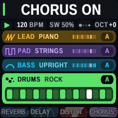
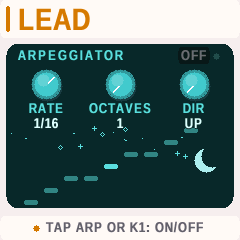
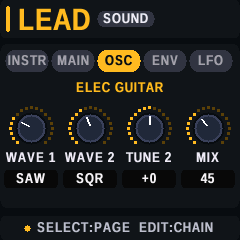
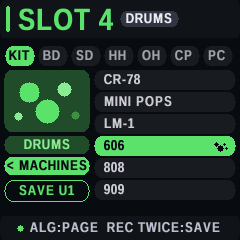

A whole band
in your pocket.
QUARTET turns the FM-1 into a four-piece band you can write songs with: a lead, pads, a bass and a drummer. Play pianos, organs, guitars, strings and strange synths, run each one through its own pedalboard, sketch riffs and grooves, and arrange them into songs. No computer needed.
Download How to install Quick start72 sounds · 23 drum kits · 30 pedals, four on every instrument · ten patterns per instrument · ten songs. Press PLAY as soon as it starts: the band is ready with a demo groove.

Home: your four players, the chosen one open, its pedals along the bottom.
Quick start
Five stages, a minute or two in all. You play the whole time: the demo keeps going while you try things.
Hear the band
- Press PLAY. Lead, pads, bass and drums start together on a demo groove.
- Turn MASTER for the volume. PLAY again stops.
Meet the instruments
- Turn SELECT to choose who you play: LEAD PAD BASS DRUMS. Their name shows at the top and their row opens out.
- Play the keys and jam along. OCT- OCT+ shift the octave.
- On drums, the first six white keys are kick, snare, hi-hat, open hat, clap and percussion.

Try different sounds
- Keep the demo playing and turn ALGORITHM: one click, one new sound. Its name shows big.
- The lead goes from Piano to Hammond, Electric Guitar, Flute, synths and oddities; on drums you change the whole kit.
- To browse by group, press EDIT: KNOB 2 picks the group, KNOB 3 the sound. HOME goes back.

Play with pedals
- Each instrument has its own pedalboard on FX SEL ENV LFO: Reverb, Delay, Distortion and Chorus to begin with.
- Tap a button to stomp on a pedal (its name shows: CHORUS ON). Tap again for off.
- Hold a button to open that pedal: KNOB 2 3 4 turn its three knobs, PRESETS picks a kind of pedal and ALGORITHM a pedal of that kind. 30 to choose from.
- Try it on the lead: tap ENV for Distortion, then hold ENV and turn KNOB 4 for more dirt.

Make something
- With the music stopped, turn PRESETS to B, an empty pattern for the chosen instrument.
- Press SEQ, then REC: LIVE shows.
- Tap REC and play a riff. The band starts and your notes go in, snapped to the beat. Tap REC to stop recording.
- Press HOME. Turn PRESETS between A and B to switch parts. Your work saves itself.

Find your way around
A few rules hold on every page, so once you know one page you know them all.
SELECT
Always the instrument.
ALGORITHM
Chooses within the page: a sound, a pedal, a step, a tab.
PRESETS
The pattern, or the page's own thing (the kind of pedal, the song).
KNOB 1–4
The four settings on screen, left to right.
TAP OR HOLD
Tap switches something, a half-second hold opens it.
HOME
Back to the band, from anywhere.
Instruments and sounds
Four players, each in its own colour: gold lead, violet pads, cyan bass, green drums. Pick a player with SELECT, give them a sound with ALGORITHM, and play.
| Player | Plays |
|---|---|
| LEAD | melodies, riffs and hooks, up to four notes at once, an octave up |
| PAD | chords and backing, up to four notes at once |
| BASS | basslines, one note at a time, two octaves down |
| DRUMS | kick, snare, hi-hat, open hat, clap and percussion |
Changing sounds
On the home screen, ALGORITHM steps through every sound for the chosen player, group by group (on drums: every kit). It works while the music plays, so you can audition sounds against the rest of the band.
For a tidier view, press EDIT. The INSTR page is a sound browser: KNOB 2 chooses the group, KNOB 3 the sound, and the one playing is lit in the player's colour. HOME goes back.
Two leads, three pads
The first three players are flexible. They start as lead, bass and pads, but each can be any of the three: press EDIT and turn KNOB 1 on the INSTR page. Run two leads for harmonies, or three pads for big layered chords. Two of a kind are numbered LEAD 1 and LEAD 2 (L1 and L2 on the home screen). Drums are always player four.

The sound browser (EDIT): type, group, sounds.
Two leads: the pad slot switched to lead.
Swap the bass to Upright or Tuba in the ACOUSTIC group and the demo turns into a different band.
Put the pads on Choir or Organ and play long chords over the groove.
Run the same groove through Jazz, CR-78 and Kitchen kits. Same beat, three moods.
All the sounds
Each player's sounds come in four groups, by what they are, then your own (USER).
| Lead | Sounds |
|---|---|
| KEYS | Piano, Xylophone, Music Box, FM Bell, Tine Keys, Clavinet |
| BAND | Hammond, Brass, Electric Guitar, Synth Brass, Flute, Harmonica |
| SYNTH | Mini Lead, Sync Lead, PWM Lead, Acid Lead, Chiptune, Porta Lead |
| ODD | Theremin, Glass Harp, Laser, Bowed Metal, Sine Swarm, Stepper |
| Pads | |
| STRINGS | Strings, Solina, Choir, Acoustic Guitar, Harp, Digital Choir |
| KEYS | Electric Piano, DX Piano, Organ, Handpan, Vibes, Marimba |
| SYNTH | Juno Strings, Poly Synth, PWM Pad, Prophet Brass, Warm Analog, Warm Synth |
| ATMOS | Drone, Frozen, Cathedral, Sweep, Glass Pad, Tidal |
| Bass | |
| ACOUSTIC | Upright, Slap, Plucked, Tuba, Fretless, Picked |
| ANALOG | Moog Bass, 303 Line, Sub Bass, Synth Bass, Rubber Bass, Slide Sub |
| DIGITAL | DX Bass, Reese, Electro Bass, FM, Deep Reese, Synth Pluck |
| WILD | Fuzz, Wobble, Growl, Bubble, Womp, Dirt Bass |
| USER | Your own: up to 8 per type. |
| Drums | Kits |
|---|---|
| GROOVE | Rock, Hip-Hop, Lo-Fi, Breaks, Jazz, Funk |
| MACHINES | CR-78, Mini Pops, LM-1, 606, 808, 909 |
| ELECTRO | Electro, Techno, Trap, House, Dub, Industrial |
| ODD | Toy, Glitch, Metal, Noise, Kitchen |
| USER | Your own: up to 4. |
The LM-1 kit plays samples of a real Linn LM-1 drum machine (its clap and percussion keys are its low and high toms); the other kits are synthesised. The percussion drum changes from kit to kit: a conga, a shaker, a tom.
A sound from an older save that is no longer on the list still loads and plays as it did, and shows at the top of the list while it is chosen.
Reading the home screen
Each player has a row showing its name, its sound and its pattern letter. The chosen player's row opens out to show the 16 steps of the bar it is playing (the step playing is white); the others show theirs as a thin strip. A muted player turns red. A>C means pattern C is waiting to start when A comes round. The line at the top shows the tempo (BPM), the swing (SW), the beat lights and the octave. Along the bottom, set apart by a strip of black, are the chosen player's four pedals: each a slice of its own case and art, with a small LED that lights when it is on.
SELECT
The player.
ALGORITHM
Its sound (drums: the kit).
PRESETS
Its pattern, A–J.
KNOB 1
Tempo.
KNOB 2
Swing, from straight to a heavy shuffle.
PLAY
The whole band starts together from the top, or stops.
The pedalboard
Pedals are where sounds get their character. Every instrument has its own pedalboard of four, and you can swap, stomp and tweak them while the music plays. Dirty up a piano, smear a pad into a dream, drown the drums in spring reverb, or turn something ordinary into something nobody has heard before.
Stomp, swap, tweak
| Stomp | Tap FX SEL ENV or LFO to switch that pedal on or off. Its name shows at the top (CHORUS ON) and the button lights while it is on. |
| Open | Hold the button half a second to open the pedal. |
| Tweak | KNOB 2 3 4 are the pedal's three knobs, named on screen (most run 0–20; digital pedals show %). KNOB 1 is its switch (a click clockwise on, anticlockwise off). |
| Swap | PRESETS chooses the kind of pedal (drive, filter, modulation, space, pitch, other); ALGORITHM chooses a pedal of that kind. |
| Done | HOME goes back to the band. |
Pedals belong to the player chosen with SELECT, so the lead, the pads, the bass and the drums can each have four different pedals. Every new project starts each player with Reverb, Delay, Distortion and Chorus.
Each pedal is drawn like a real boutique stompbox, with its own art on the case: a lightning bolt on Distortion, a lighthouse on Tremolo, ripples on Delay, tape reels on Tape Echo, a melting clock on Loose. Its LED glows when it is on; off, the LED goes dark with OFF beside it.
Hold ENV: the Distortion pedal, switched on.

Tap a pedal button: it says what you switched.
Try these
Choose the lead and pick Piano or Hammond. Tap ENV for Distortion, then hold ENV and turn KNOB 4 up for a gritty, overdriven keyboard.
Choose the pads and tap LFO for Chorus. Hold LFO and raise KNOB 3 (depth) for a wide, shimmering wash.
Choose the drums and hold FX. Turn ALGORITHM to Spring Reverb, then turn up KNOB 2 for that splashy, garage-rock room.
Hold any pedal button and turn PRESETS to OTHER. Now ALGORITHM runs through Old Media, Glitch, Underwater, Synth, Lo-Fi, Loose and Music Box. Try Old Media on strings, or Underwater on a guitar.
The whole pedalboard at once

The pedalboard: EDIT twice.
Press EDIT twice to see the chosen player's four pedals side by side, in the order the sound flows through them (FX, SEL, then ENV, LFO). Each card is the pedal itself, with its LED and its three knobs and their values. A pedal that is off goes dark; the one you are working on is framed white.
ALGORITHM moves between them, KNOB 1 switches the framed one on or off, KNOB 2–4 turn its knobs (named on the bottom line), and PRESETS swaps it for any other pedal, kind by kind. EDIT once more goes home.
All 30 pedals
| Kind | Pedals |
|---|---|
| DRIVE | Distortion · Overdrive · Fuzz · Octave Fuzz (adds a note an octave up) · Wavefolder (bright, metallic grit) · Bitcrusher (lo-fi, crunchy digital) |
| FILTER | Filter Seq (a filter that steps in time with the beat) · Wah (opens up as you play harder) |
| MODULATION | Chorus · Phaser · Flanger · Tremolo · Slicer (chops the sound in time) · Vibrato · Pump (ducks on every kick drum) |
| SPACE | Reverb · Delay · Tape Echo · Shimmer (a reverb that rises an octave) · Reverse Delay · Spring Reverb |
| PITCH | Shifter (moves the sound up or down) · Harmonizer (adds a second note at an interval) |
| OTHER | Old Media (worn tape and records: wobble, hiss, crackle) · Glitch (stutters and skips) · Underwater · Synth (adds a square-wave synth an octave or two below) · Lo-Fi (grainy and dull, like an old radio) · Loose (late notes, and a second player a step behind) · Music Box |
Good to know
Space pedals are shared: there is one of each for the whole band, like a send on a mixing desk. Each player sets how much it sends; the other two knobs change the shared pedal for everyone. All the other pedals belong to their own slot.
A pedal already on another of the player's buttons isn't offered again (nor Glitch beside Loose, which share memory). Stopping the music with PLAY silences every pedal at once, so no echo or late note carries on.
If switching a pedal on would overload the chip, it stays off and CPU FULL shows: switch another one off first. Phaser, Filter Seq and Wah are the heaviest. If the audio crackles, try switching a pedal off.
Recording and patterns
Every player has ten patterns, A–J: think of them as parts, like a verse riff, a chorus riff and a fill. Each is one to four bars long. Choose one with PRESETS; while the band plays, the change waits until the current pattern comes round, so parts always switch on the beat.
Live: play it in while the band plays, and QUARTET snaps it to the beat. Step by step: place notes one at a time, at your own pace.
Write a new bassline in pattern B while A plays, then turn PRESETS: B takes over when A comes round.
Live recording
Press SEQ for the step recorder, then REC: LIVE shows and SEQ blinks. Tap REC and play: the band starts if it was stopped, and your notes go into the pattern playing, each on the nearest 16th note, added to what is already there. Tap REC again to stop recording while the music carries on. Hold REC for one second to clear the pattern and start over. KNOB 1–3 set the bars, the cursor and the bar shown.
Step by step (SEQ)
The step recorder shows a piano roll: each note is a bar as long as it sounds, and the cursor is a column in the player's colour. Move with ALGORITHM and play a key to write a note there; the cursor jumps past it. Hold keys together for a chord (up to four, on lead and pads).
The knobs shape the note at the cursor and the ones you write next:
| KNOB 1 BARS | The pattern's length: 1, 2, 3 or 4 bars. |
| KNOB 2 LEN | How long the note lasts: 1/16, 1/8, dotted 1/8, 1/4, dotted 1/4, 1/2, dotted 1/2, a whole bar. |
| KNOB 3 EXP | How it's played: NORMAL, SOFT, LOUD, SHORT (staccato), PUNCH (an accent: louder and brighter), SMOOTH (legato: glides into the next note) or PLUCKED (dies away by itself). |
| KNOB 4 NOTE | Move the note or chord up or down a semitone. When stopped, you hear it. |
| ARP | Tap: a tie (the note before lasts a step longer). Hold: a rest (the step cleared). |
| REC | Tap: live recording. Hold one second: clear the pattern. |
The bottom line shows where you are and the note length in words (STEP 7/16 K2: QUARTER); the top right names the note at the cursor, or HELD (inside a longer note) or REST. A new note cuts off any note it would overlap. While the music plays, a long pattern is followed bar by bar, except for three seconds after you move or write.

The step recorder: bars, length, expression, the note.
Live recording.

Drums: a row per drum, the chosen one lit.

Copying the pads' pattern A into the lead's pattern B.
Drum beats
On the drums, the step recorder is a grid. The first six black keys choose a drum (and play it), and the 16 white keys switch its hits on and off across the bar, like a classic drum machine. KNOB 4 or OCT- OCT+ move to another bar, KNOB 1 sets the length.
KNOB 3 sets how new hits are played: SHORT and PLUCKED choke a hit, SMOOTH lets it ring, SOFT and LOUD set the strength. To change one hit, hold its white key and turn KNOB 3. Softer and shorter hits look dimmer; punchy and loud ones get a white mark.
Copying parts
Building a variation? Hold SEQ in the step recorder for the copy page: every player's patterns A–J, the ones with notes tinted. The pattern you are editing is framed white: that's where the copy goes. SELECT picks the player to copy from (lead, pads and bass can copy from each other, so the pads can take the lead's tune; drums copy from drums) and PRESETS or ALGORITHM the pattern. REC twice copies everything, notes, lengths and expression; SEQ goes back without copying.
On the home screen, hold ARP and turn PRESETS to copy the current pattern into the next letter: a quick way to start a variation.
Moving and clearing
Hold OCT- or OCT+ half a second to move the pattern you are editing down or up an octave. Hold REC one second in the step recorder to clear the pattern.
Tempo and swing
On the home screen, KNOB 1 sets the tempo and KNOB 2 the swing for the whole song: from 50 % (straight) to 66 % (a heavy shuffle), a click a step, shown as SW. Every second 16th note comes a little later while the beat itself stays exactly in time.
Playing live
Tools for jamming and performing over your patterns: an arpeggiator, a beat-repeat effect, a mixer to bring parts in and out, and a key lock so you can't hit a wrong note.
Arpeggiator (ARP)
Hold a chord and the arpeggiator plays its notes one after another, locked to the beat; it also arpeggiates the chords in your patterns. It works like a pedal button: tap ARP to switch it on or off (ARP ON shows), hold it for its page.
| KNOB 1 | On / off. |
| KNOB 2 | Rate: 1/4 to 1/32. |
| KNOB 3 | Octaves: 1 to 4. |
| KNOB 4 | Direction: up, down, random. |
The arpeggiator is for lead, pads and bass; on the drums its page says so.
Beat repeat (hold GLO)
Hold GLO while the band plays: the slice that is playing loops round and round, a stutter or a build-up, until you let go. Then the music carries on exactly where it would have been. While holding, the first five white keys choose the slice: 1/2 bar, 1/4, 1/8 (to start), 1/16, 1/32.
Mixer (GLO)
Tap GLO for the mixer, a channel per player. KNOB 1–4 set the four volumes, shown as a knob in each player's colour, a value and a column of LEDs. FX SEL ENV LFO mute and unmute the four players, so you can drop the drums out for a breakdown and bring them back in. The LED by each button name glows while that player plays; muted, it goes dark, the name turns red and MUTE shows.
Key lock and lights
Tap GLO again for the KEY page: the key, its relative minor and its signature, and an octave of keyboard with the key's notes lit and named. ALGORITHM picks the key. KNOB 1 turns on LOCK, so the keys play only notes in the key: perfect for soloing without wrong notes. KNOB 2 turns on LIGHTS, so the key's notes glow on the keys. Tap GLO once more to go home.
Octaves and MIDI
OCT- OCT+ shift the keys an octave at a time. To play QUARTET from another keyboard, hold HOME and turn PRESETS to choose a MIDI channel (or OMNI): incoming MIDI notes play the chosen player.

The arpeggiator.

The mixer.

The KEY page.
Song arrangement
Once you have a few parts, SUPER SEQ strings them together into a song: intro, verse, chorus, breakdown. Each player follows its own row, so the drums can keep a beat while the lead changes riff.
SUPER SEQ
Press SEQ twice (the step recorder, then SUPER SEQ). There are ten songs, A–J. Each player has a row of up to eight boxes; a box plays its pattern once, then moves on to the next box, and each player moves on at its own pattern's length.
- A–J: play that pattern. Blank: keep playing the pattern before (blanks at the start are silent). X: a rest.
- So
A...B.A.plays A A A A B B A A.
| SELECT | The player's row. |
| KNOB 1 | SUPER SEQ on / off. While on, it picks the patterns instead of PRESETS. |
| ALGORITHM or KNOB 2 | The box. |
| KNOB 3 / 4 | The box's pattern (blank, A–J or X) / the song's length (1–8 boxes). |
| PRESETS | The song. Hold ARP and turn: copy it into the next letter. |
SEQ again goes back to the step recorder.
Keeping your work (SAVE)
Your current work saves itself two seconds after the music stops and goes quiet. For keeps, there are four save slots: press SAVE, choose a slot with ALGORITHM or KNOB 1, then REC twice saves and PLAY twice loads (the second press within three seconds; any other button cancels). A slot holds everything, your own sounds included. Saving and loading stop the music. Saves from earlier versions of QUARTET still load. SAVE again closes the page.

SUPER SEQ: a row per player.

The save page.
Advanced sound editing
Every sound is a real synth underneath, and you can reshape it: make a piano brighter, a bass rounder, a pad slower to swell. Then save it as your own.
The sound editor (EDIT)
Press EDIT for the chosen player's SOUND pages, with its slot on top (SLOT 1–4, as on the home screen, and its type beside it). ALGORITHM chooses the page, KNOB 1–4 edit it, SELECT moves to another player. EDIT again opens the pedalboard; HOME goes back.
The first page, INSTR, is the sound browser: a screen-printed picture of the type (mountains under a sun for lead, rings for pads, stacked blocks for bass, confetti for drums), the type (KNOB 1: lead, pad or bass), the group (KNOB 2), the group's sounds (KNOB 3, the one playing filled in the player's colour) and the USER slot to save to (KNOB 4).
| Page | KNOB 1 | KNOB 2 | KNOB 3 | KNOB 4 |
|---|---|---|---|---|
| INSTR | Type: lead, pad, bass | Group | Sound in the group | USER slot to save to |
| MAIN | Glide | Brightness (cutoff) | Resonance | Filter envelope |
| OSC | Wave 1 | Wave 2 | Wave 2 tuning | Mix / FM amount |
| ENV | Attack | Decay | Sustain | Release |
| LFO | Rate | Depth | Target: pitch, filter, volume, PWM | Wave: tri, square, saw, random |
In musical terms: MAIN makes a sound brighter or darker and adds glide between notes (from off to about half a second); ENV sets how a note starts and fades (a slow attack swells in, a short decay plucks); LFO adds movement, like vibrato (pitch), a wah-like sweep (filter) or tremolo (volume).
Waves: sine, triangle, saw, square, noise, FM, pulse (set the LFO target to PWM and its width sways) and sync (wave 2 only: hard sync, swept by the filter envelope for that screaming lead).
Drums: the first page is KIT (group, kit, USER slot), then a page per drum (BD SD HH OH CP PC) with its pitch, decay and level on KNOB 1–3.
Your own sounds
Tweak a sound, go to INSTR (or KIT), choose a USER slot with KNOB 4 and press REC twice (the bottom line asks first). SAVED USER 3 shows, and the player now plays your sound from the USER group. There are 8 USER slots per type and 4 for drum kits; saving over a used slot replaces it. The USER bank is kept with your work and inside each saved project, and clear all leaves it alone.
Voices and slots
Lead, pad and bass slots share nine voices: four for each lead or pad, one for a bass. With three lead or pad slots, the busiest gives a voice or two up. Patterns stay when a slot changes type; a bass plays just the first note of each step.
INSTR: the type's picture, the type and group, the sounds.

OSC: two pulse waves.

Drums: the KIT page.
Complete controls
Everything in one place, for when you know what you want and just need the button.
How the controls work
SELECT
Always the player (track).
PRESETS
The pattern, or the page's own thing: the kind of pedal on a pedal page, another pedal on the pedalboard, the song in SUPER SEQ.
ALGORITHM
Moves within the page: the sound, the pedal, the cursor, the tab, the slot, the box. It never takes you to another page.
KNOB 1–4
The four settings shown on the page, left to right. Where there is an on/off switch, it is KNOB 1.
TAP OR HOLD
A tap switches something or opens it; holding half a second does the other. Pedal buttons and ARP: tap on/off, hold for the page. GLO: tap the mixer, hold beat repeat.
REC TWICE
Anything that keeps or replaces your work asks first: saving a sound or a project, copying a pattern, clearing all.
PRESS AGAIN
A page's own button again moves on or closes it: EDIT sound → pedalboard → home, SEQ recorder ↔ SUPER SEQ, GLO mixer → KEY → home.
HOME
Home, from anywhere.
Anywhere
| PLAY | Start (from step one) and stop. |
| SELECT | The player. |
| PRESETS | Its pattern, A–J. Hold ARP: copy into the next letter. Hold HOME: the MIDI channel. |
| FX SEL ENV LFO | Tap: the pedal on / off. Hold 0.5 s: the pedal's page. |
| EDIT | The sound editor (from INSTR); again: the pedalboard; again: home. |
| SEQ | The step recorder; again: SUPER SEQ; again: back to the step recorder. Held in the step recorder: the copy page. |
| ARP | Tap: on / off. Hold 0.5 s: the arpeggiator's page. |
| GLO | Tap: the mixer, then the KEY page, then home. Hold: beat repeat. |
| SAVE | The save page (again: close). |
| HOME | Home. |
| OCT- OCT+ | Tap: the keys' octave (drum step recorder: the bar). Hold 0.5 s: the pattern being edited moves down / up an octave. |
| MASTER | The volume. |
Home screen
| ALGORITHM | The sound or kit, through every group. |
| KNOB 1 / 2 | Tempo / swing (50–66 %). |
| REC | Hold 1 s, then REC again: clear everything. |
Pedal and arpeggiator pages
| PRESETS / ALGORITHM | Pedal: the kind / the pedal within it. |
| KNOB 1 | On / off. |
| KNOB 2 / 3 / 4 | The pedal's three knobs; arpeggiator: rate / octaves / direction. |
Pedalboard (EDIT twice)
| ALGORITHM | The pedal slot. |
| PRESETS | Another pedal in that slot. |
| KNOB 1 / 2–4 | On / off / its three knobs. |
Step recorder
| KNOB 1 / 2 / 3 / 4 | Lead, pads, bass: bars / note length / expression / note up-down. Drums: bars / – / expression / bar shown. |
| ALGORITHM | The cursor. |
| Keys | Lead, pads, bass: write notes (held together: a chord). Drums: black keys choose the drum, white keys switch steps. |
| ARP | Tap: tie. Hold: rest. |
| REC | Tap: live recording. Hold 1 s: clear the pattern. |
| SEQ | Tap: SUPER SEQ. Hold: the copy page. |
Live recording
| REC | Recording on / off (starts the music if stopped). Hold 1 s: clear the pattern playing. |
| KNOB 1 / 2 / 3 | Bars / cursor / bar shown. |
Copy page
| SELECT / PRESETS | The player / the pattern to copy from. |
| REC twice | Copy it into the pattern being edited. |
| SEQ | Back, without copying. |
Sound editor
| ALGORITHM | The page: INSTR, MAIN, OSC, ENV, LFO (drums: KIT, then each drum). |
| KNOB 1–4 | The page's four settings. |
| REC twice | On INSTR / KIT: save to the USER slot. |
SUPER SEQ, mixer, KEY and save page
| SUPER SEQ | KNOB 1–4: on-off / box / its pattern / length. ALGORITHM: the box. PRESETS: the song. |
| Mixer | KNOB 1–4: the volumes. FX SEL ENV LFO: mute. |
| KEY | ALGORITHM: the key. KNOB 1: lock. KNOB 2: lights. |
| Save page | ALGORITHM or KNOB 1: the slot. REC twice: save. PLAY twice: load. |
Gallery